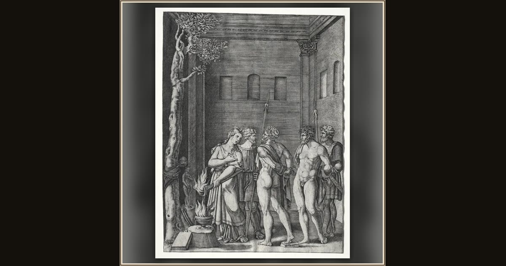

Orestes and Pylades brought to Iphigenia for Sacrifice
Agostino Veneziano (Italian, 1490–1540) · 1514/1536 · cma
Two captives stand before Iphigenia beside the altar fire, with bound hands visible. She orders the strangers' hands unbound for the goddess's rites (467–468). Explore its place in Euripides's Plays, Iphigenia in Tauris, line 458.